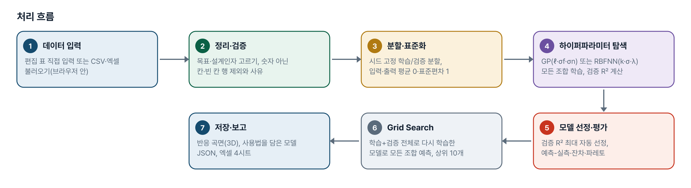
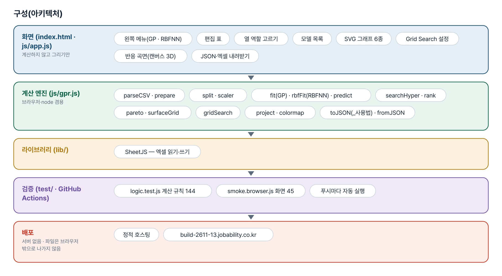
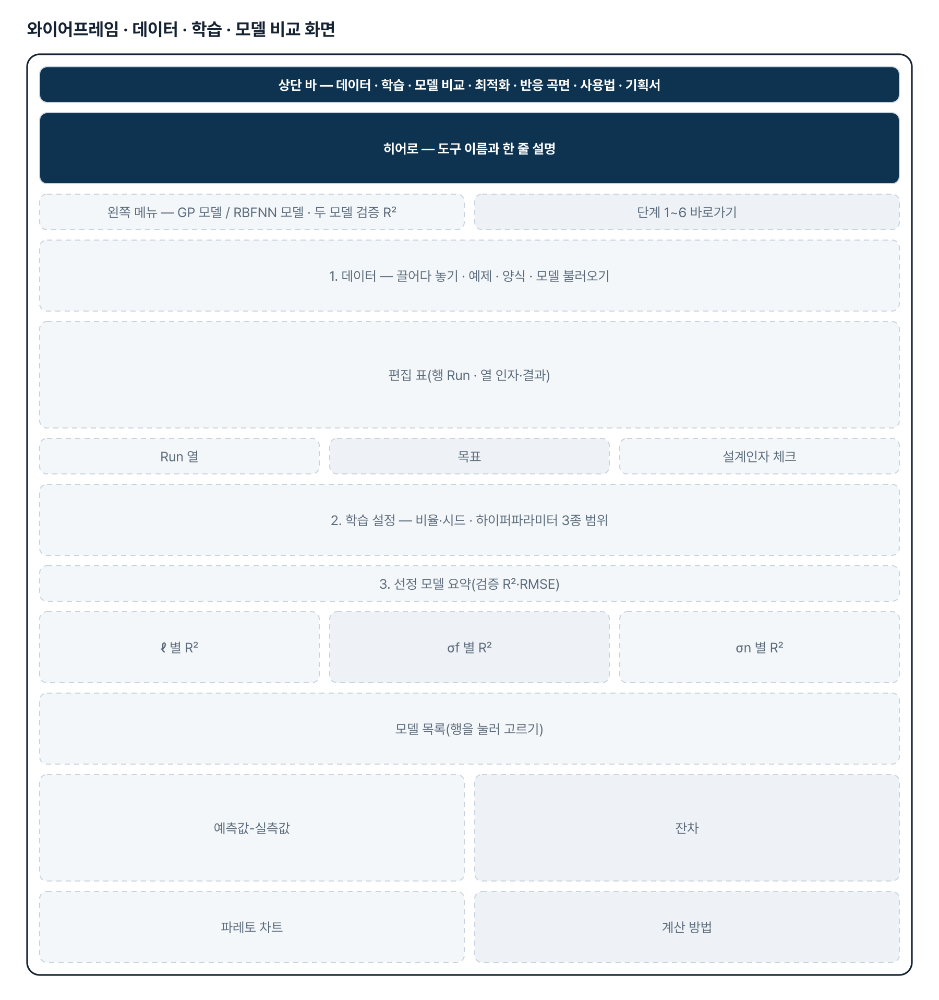
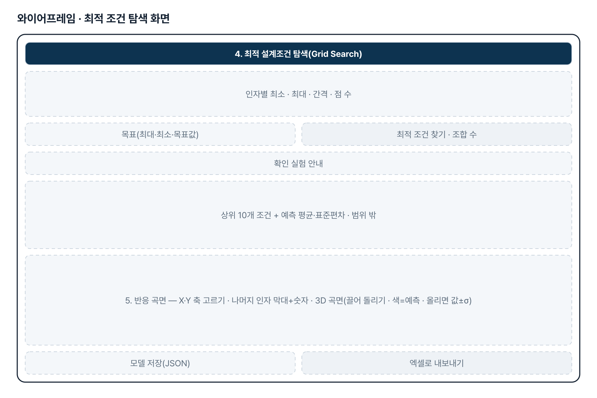
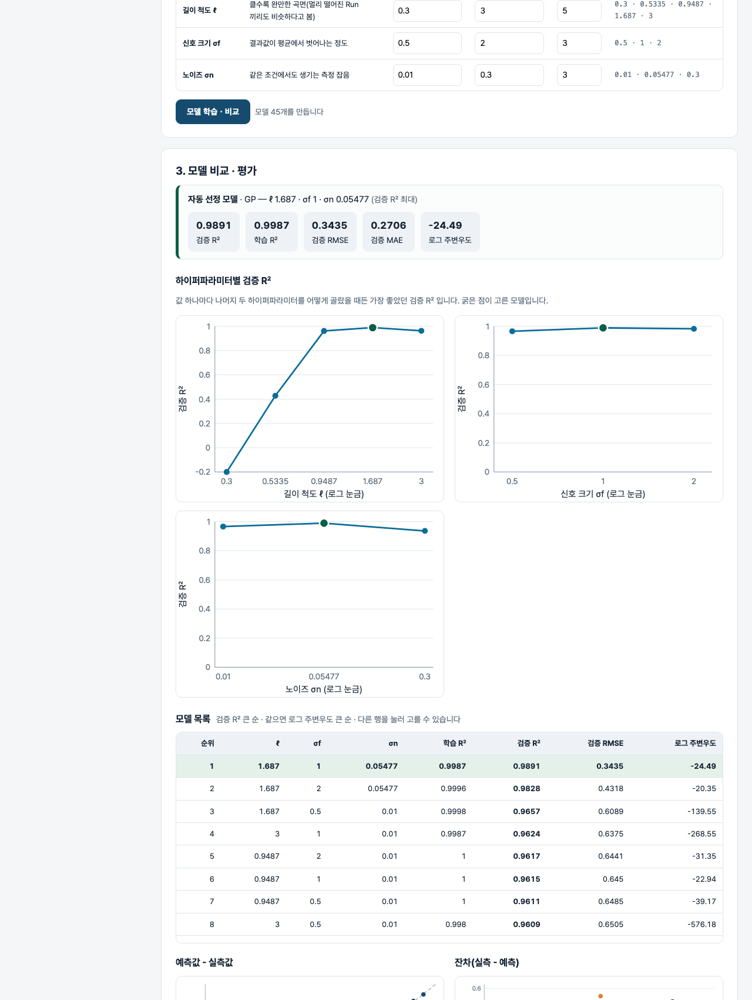

기획서 내려받기
파이프라인 · 아키텍처 · 와이어프레임 · 개발일지가 들어간 워드 문서입니다. 버전마다 따로 남깁니다.
| 버전 | 날짜 | 바뀐 점 | 파일 |
|---|---|---|---|
| v1.1 | 2026-11-08 | 반응 곡선 → 반응 곡면 — 두 인자를 X·Y, 예측을 Z·색으로 그린 3D 곡면(마우스로 돌리기, 나머지 인자는 막대+숫자 칸 고정, 올리면 값과 GP ±1σ) / RBFNN 모델 추가 — 왼쪽 메뉴에서 GP / RBFNN 선택, 하이퍼파라미터(중심 수 k·폭 σ·규제 λ) 격자 비교·예측-실측·최적화·곡면·저장 모두 동작, σ 는 GP 전용 / 모델 JSON 맨 앞에 _사용법 — 입력 이름·순서·단위(학습 범위), 계산 순서, JavaScript·Python 예시와 예시 입력 → 결과 / Case 열을 Run 이름 열로 인식, 사이트 주소 build-2611-13.jobability.co.kr 로 정리 | 워드 내려받기 |
| v1.0 | 2026-11-03 | 첫 판 — 데이터 입력·GPR 하이퍼파라미터 비교·평가 그래프·Grid Search·모델 저장·엑셀 내보내기 / 기획서 워드 판·파이프라인·아키텍처·와이어프레임 추가 | 워드 내려받기 |
요구사항과 구현
| 기획서 요구 | 구현 |
|---|---|
| 설계인자·결과 직접 입력, 데이터 테이블(행 Run · 열 인자·결과) | 편집 표(행·열 추가, 엑셀 붙여넣기) + Run 열·목표·설계인자 고르기 |
| CSV 파일 불러오기 | CSV(UTF-8·CP949)·엑셀 첫 시트, 숫자 아닌 칸·빈 칸 행은 사유와 함께 제외 |
| 학습/검증 비율 조절 | 비율 50~95% + 시드 — 같은 시드면 같은 분할 |
| 하이퍼파라미터 3종 탐색 범위 | 길이 척도·신호 크기·노이즈 각각 최소·최대·개수(로그 간격) → 모든 조합 학습 |
| 모델별 R² · 최적 모델 선정 | 모델 목록, 검증 R² 최대 자동 선정(동률이면 로그 주변우도), 다른 행 직접 선택 |
| 예측값-실측값 · 잔차 · 파레토 · 성능 비교 그래프 | 산점도(학습/검증 + y=x) · 잔차 · 설계인자 영향도 파레토 · 하이퍼파라미터별 R² |
| Grid Search 최적 설계조건 · 예측 결과 그래프 | 인자별 최소·최대·간격, 조합 수 먼저 표시, 상위 10개 + 예측 평균·표준편차, 반응 곡선(±1σ) |
| 학습 모델 저장·불러오기 | JSON(표준화 계수·하이퍼파라미터·학습 데이터) — 불러오면 같은 예측 |
그림으로 보기





개발일지
2026-11-13 · 마무리 — 로그인 · 게시판 · 첫 화면(판 2026-11-13.1)
- 과정 마무리 묶음을 붙임(마산 2차수 과제와 같은 키트) — 로그인 전 첫 화면(사진 3장 · 기능 · 사용 순서 · 기획서), 회원가입 → 사용 신청 → 관리자 승인, 게시판 · 새 글 알림, 내 정보, 관리(구성원 승인 · 첫 화면 모양)
- Supabase 표 · 함수 · 정책은 전부 build261113_ 로 시작(auth.sql · board.sql · site.sql). 과정용 프로젝트에 적용했고, supabase/README.md 순서대로 본인 프로젝트로 옮길 수 있음
- 도구의 계산 · 판정 · 저장 방식은 그대로(업무 자료는 지금처럼 브라우저 안에서만 처리). 기획서 · 사용법 쪽은 로그인 없이 읽음
- 내 PC(파일로 열기 · localhost)에서는 로그인을 건너뜀 — 주소 끝에 ?auth=1 을 붙이면 로그인 화면을 볼 수 있음
2026-11-08 · v1.1 — 반응 곡면 · RBFNN · 모델 사용법
- 기획자 요청 3건(11-07) 반영 — 반응 곡면, 모델 파일 사용법, RBFNN
- 엔진 gpr.js — kmeans · rbfFit · train(종류별) · surfaceGrid · project · colormap · 사용법(usageOf), 저장 형식 version 2(v1.0 파일도 읽음)
- 화면 — 왼쪽 메뉴(모델 종류·두 모델 R²), 하이퍼파라미터 표가 종류에 따라 바뀜, 반응 곡면 캔버스(build-2611-04 의 정사영 방식)
- 기획자 실데이터(4인자 39 Run)로 로컬 확인 — 검증 R² GP 0.990 · RBFNN 0.984, 곡면 그림 확인. 실데이터는 저장소에 넣지 않음
- 계산 테스트 144 · 화면 테스트 45 통과, 새 테스트는 v1.0 엔진·일부러 깨뜨린 엔진에서 실패 확인
2026-11-03 · 첫 판
- 패들릿 원광재 기획(머신러닝 기반 최적화 툴)을 작업 지시서(CLAUDE.md)로 옮기고 구현
- 계산 엔진 gpr.js — 읽기·제외 사유, 분할·표준화, GPR, 지표, 하이퍼파라미터 탐색, 영향도, Grid Search, 저장
- 화면 — 편집 표·모델 목록·SVG 그래프 6종·최적 조건·반응 곡선·JSON·엑셀
- 계산 테스트 84 · 화면 테스트 25 통과